The Front-End Developer
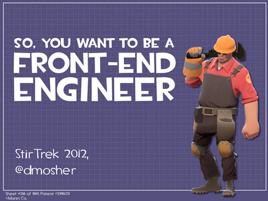Are you still with us...
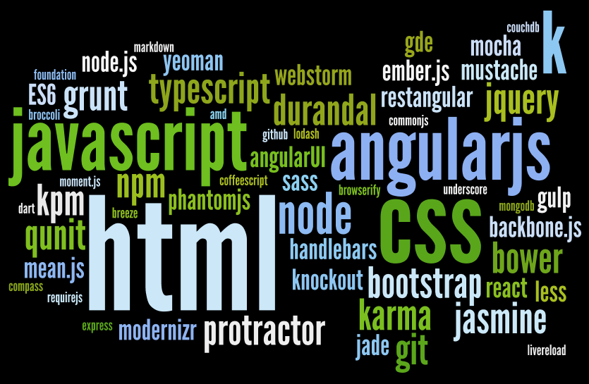Live of a software developer
1985 - Z80, DOS, Assembler, QBasic, DBase
....
1990 - Win32, C++, VB1
1998 - Win32, MFC, ATL, C++, VB6, ASP
....
2002 - dotNET 1.0, C#, Asp.NET, Web/WinForms
2008 - dotNET 3.5, C#, WCF, WPF, Silverlight
2012 - dotNET 4.0, C#, MVC, JQuery
....
2015 - Angular/Ember, Javascript, Node and a little bit of C#
HTML5/CSS Is Taken Over the world
HTML/CSS Everywhere!
- Web Applications (yes of course)
Flash is dead
WPF, Silverlight and WinForms is dead
Desktop App's
Atom & Bracket
Node-Webkit
Windows Store Apps
Chrome App's
Mobile App's
Cordova
Telerik Platform
Iconic
HTML is Nothing Without a Good Style

A better CSS
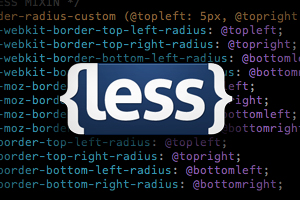Will Javascript Take Over the world too?
Atwood's Law
Any application that can be written in JavaScript, will eventually be written in JavaScript
Javascript Everywhere!
- Browser (yes of course)
Web Servers - Node.js
Build tools - Bower/Grunt
Desktop App's
Mobile App's
Databases - NoSQL
Operating Systems - Scripting
Embedded - Tessel
...
JavaScript The Good Parts

Can we do it better...
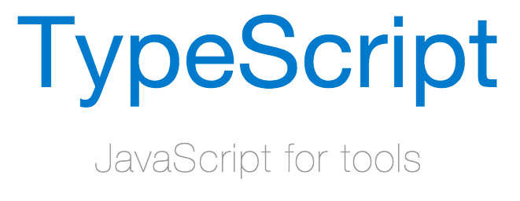ES6

Use it Today with 'Traceur'
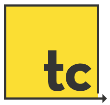Front-end frameworks


Front-end trends
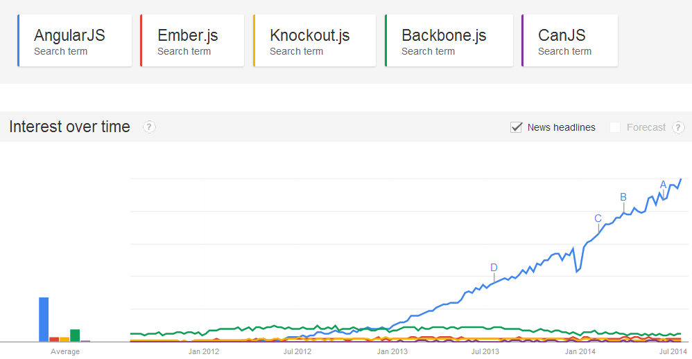Github Stats
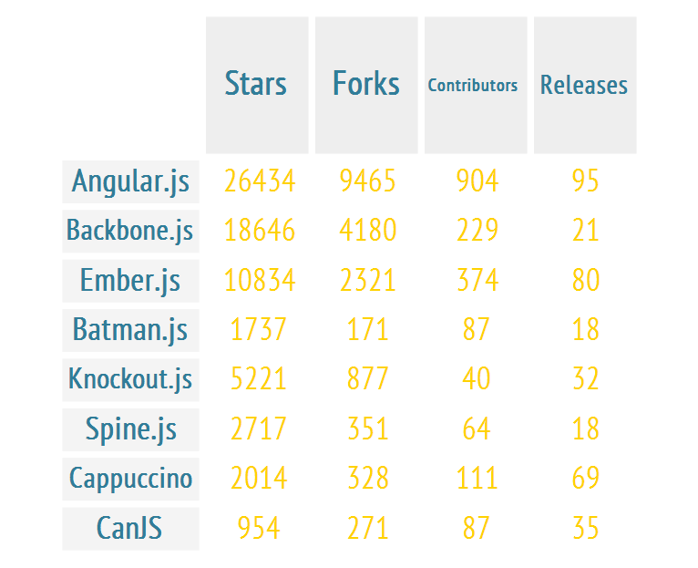StackOverflow Questions
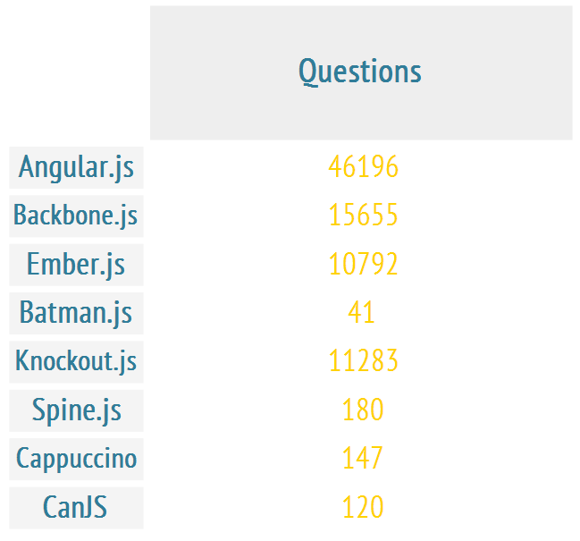InfoQ Comparision
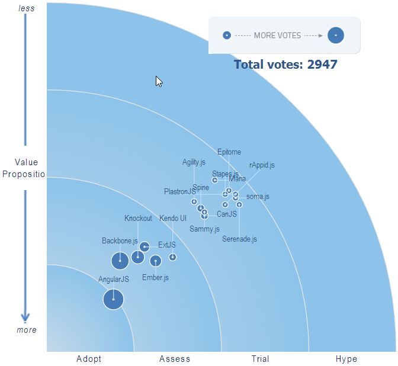So the winner is...
My Feelings About AngularJS over Time

Separation of Concerns
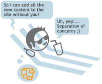Separation of Concerns
Service API

Front-end libraries


 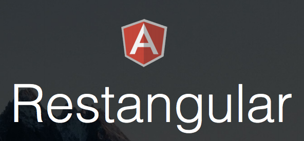
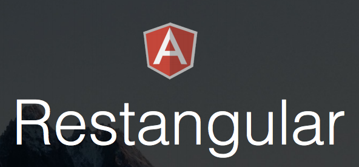
New kids in town
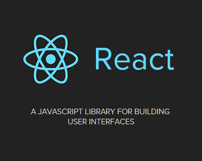Html, css and javascript, now what...
- Typescript/CoffeeScript compile, Bundeling, Minification
Concat, Image optimize, Jshint
Templating, Cdnify
Less/Sass compile, Dist, Htmlmin
???
Client side packaging and build


All based on


And we need to test, of course!


SQL is dead,long live NoSQL
Maybe not completely true, but NoSQL is certainly coming!

Throw it all together

This is not the end, it's just the beginning.
By Peter Cosemans